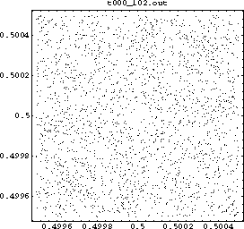

تولید اعداد شبهتصادفی به روش همنهشتي معکوس
Pseudorandom number generator algorithms
این روش برای اولینبار توسط Eichenauer و Lehn در سال 1986 شرح داده شد. این روش از “وارون ضربی همنهشتی” (در صورت وجود) برای تولید مقادیر بعدی استفاده میکند.
الگوریتم این روش به شرح زیر است:
\begin{align} \ x_i \equiv \big( a \bar{x}_{i-1} + c \big) \ mod \ m, \ with \ \ 0 \leq x_i < m \\ \end{align}
و آن را به شکل زير علامتگذاري ميکنيم:
\begin{align} \ ICG(m, a, c, x_0).\\ \end{align}
در این رابطه$\bar{x}$ وارون ضربی $x$ به پیمانه همنهشتی $m$ است. (در شرایطی که این وارون موجود نباشد آنگاه مقدار $x$ برابر $0$ در نظر گرفته میشود). این وارون را به شکل زیر تعریف میکنیم:
\begin{align} \ 1 \equiv \bar{x} x \ mod \ m \\ \end{align}
این الگوریتم دنباله $x_{n},\ n \geq 0$ را تولید میکند به طوری که $\forall i : \ x_{i} \in \{ 0, 1, 2, \dotsm, m-1 \}$. برای بدست آوردن اعداد در بازهی $[0,1)$ اعداد بدست آمده را بر پیمانه همنهشتی $(m)$ تقسیم میکنیم:
\begin{align} \ y_i = \frac{x_i}{m}, \ \ \forall i \ : y_{i} \in [0,1)\\ \end{align}
از ویژگیهای خوب مولد همنهشتی معکوس میتوان به عدم وجود ساختار شبکهایی در اعداد تولید شده اشاره کرد. (در این خصوص کاملاً با مولد همنهشتی خطی متضاد است.)

تصوير 1 - $ICG(2^{31} - 1, 1288490188, 1, 0)$
نوشته شده در خرداد ماه 1392 توسط محمدرضا تأثیری